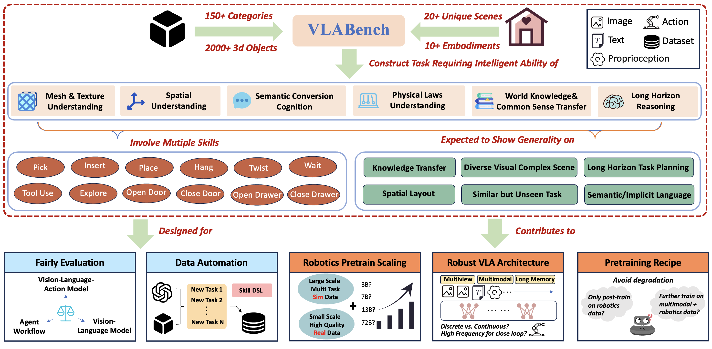

📑 Publications

VLABench: A Large-Scale Benchmark for Language-Conditioned Robotics Manipulation with Long-Horizon Reasoning Tasks
"First benchmark for VLA. Not only for evaluation, definition matters most."


MOSS: An Open Conversational Large Language Model
"First open source large language model after ChatGPT moment. Github star 12k+."